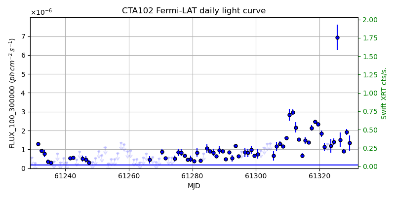
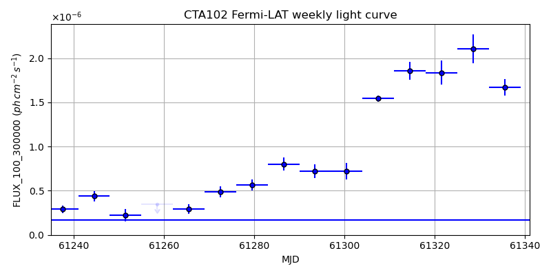
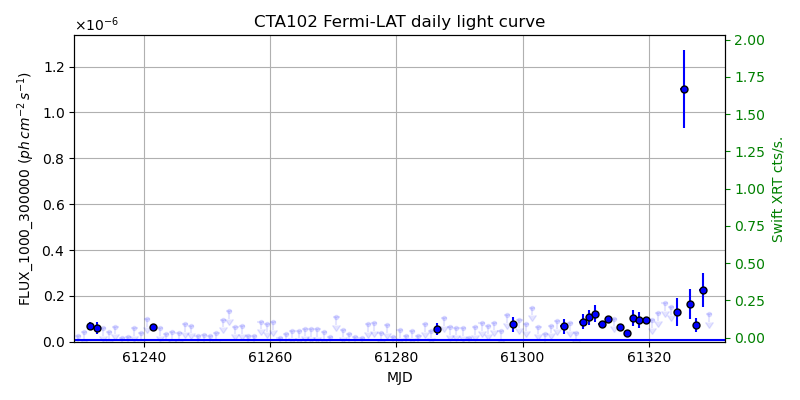
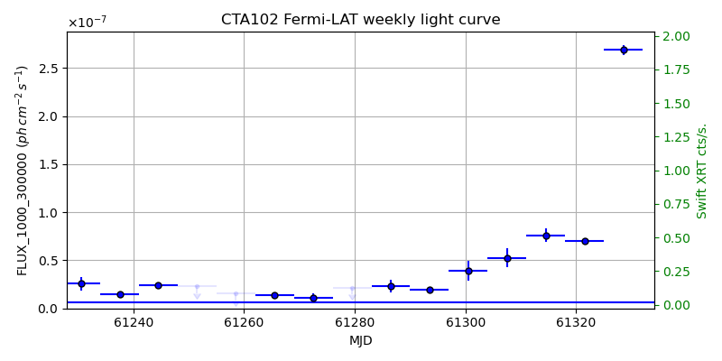

LAT Lightcurve site: https://fermi.gsfc.nasa.gov/ssc/data/access/lat/msl_lc/source/CTA_102
Swift site: https://www.swift.psu.edu/monitoring/source.php?source=CTA102
NED: Query
Time of last update of this page: UT: 2026-10-17 15:29 (MJD: 61330.646)
| Property | Value |
|---|---|
| R.A. | 22:32:36.48 |
| Dec. | 11:43:51.6 |
| z | 1.032 |
| 3FGL SpectrumType | LogParabola |
| 3FGL PL Index | |
| 3FGL Flux_100_300000 | 1.68e-07 1 / (s cm2) |
| 3FGL Flux_1000_300000 | 6.39e-09 1 / (s cm2) |
| 3FGL Flux >200 GeV | 3.94e-13 1 / (s cm2) |
| 3FGL Extrap. Crab >200 GeV | 0.00 |
| 3FGL Flux After EBL Absorption >200GeV | 7.20e-15 1 / (s cm2) |
| 3FGL EBL Crab Fraction >200GeV | 0.00 |

| MJD | dMJD | Flux | dFlux | Frac3FGL | FracCrab>200GeV | EBLFracCrab>200GeV |
|---|---|---|---|---|---|---|
| 61325.50 | 0.50 | 6.93e-06 | 6.83e-07 | 41.29 | 0.07 | 0.00 |
| 61326.50 | 0.50 | 1.52e-06 | 3.79e-07 | 9.04 | 0.02 | 0.00 |
| 61327.50 | 0.50 | 9.17e-07 | 1.10e-07 | 5.46 | 0.01 | 0.00 |
| 61328.50 | 0.50 | 1.91e-06 | 1.58e-07 | 11.40 | 0.02 | 0.00 |
| 61329.50 | 0.50 | 1.34e-06 | 4.08e-07 | 7.99 | 0.01 | 0.00 |

| MJD | dMJD | Flux | dFlux | Frac3FGL | FracCrab>200GeV | EBLFracCrab>200GeV |
|---|---|---|---|---|---|---|
| 61293.50 | 3.50 | 7.22e-07 | 7.72e-08 | 4.30 | 0.01 | 0.00 |
| 61300.50 | 3.50 | 7.19e-07 | 9.36e-08 | 4.28 | 0.01 | 0.00 |
| 61307.50 | 3.50 | 1.54e-06 | 3.50e-08 | 9.19 | 0.02 | 0.00 |
| 61314.50 | 3.50 | 1.86e-06 | 9.97e-08 | 11.05 | 0.02 | 0.00 |
| 61321.50 | 3.50 | 1.84e-06 | 1.39e-07 | 10.94 | 0.02 | 0.00 |

| MJD | dMJD | Flux | dFlux | Frac3FGL | FracCrab>200GeV | EBLFracCrab>200GeV |
|---|---|---|---|---|---|---|
| 61325.50 | 0.50 | 1.10e-06 | 1.71e-07 | 172.40 | 0.29 | 0.01 |
| 61326.50 | 0.50 | 1.64e-07 | 6.54e-08 | 25.66 | 0.04 | 0.00 |
| 61327.50 | 0.50 | 7.33e-08 | 3.23e-08 | 11.47 | 0.02 | 0.00 |
| 61328.50 | 0.50 | 2.25e-07 | 7.39e-08 | 35.23 | 0.06 | 0.00 |
| 61329.50 | 0.50 | 1.20e-07 | 0.00e+00 | 0.00 | 0.00 | 0.00 |

| MJD | dMJD | Flux | dFlux | Frac3FGL | FracCrab>200GeV | EBLFracCrab>200GeV |
|---|---|---|---|---|---|---|
| 61293.50 | 3.50 | 1.97e-08 | 2.93e-09 | 3.09 | 0.01 | 0.00 |
| 61300.50 | 3.50 | 3.92e-08 | 1.03e-08 | 6.13 | 0.01 | 0.00 |
| 61307.50 | 3.50 | 5.27e-08 | 9.62e-09 | 8.24 | 0.01 | 0.00 |
| 61314.50 | 3.50 | 7.61e-08 | 7.02e-09 | 11.90 | 0.02 | 0.00 |
| 61321.50 | 3.50 | 7.03e-08 | 2.30e-09 | 10.99 | 0.02 | 0.00 |
--------------------------------------------------------- Using user-supplied coords: 22:32:36.48 11:43:51.6 2000 --------------------------------------------------------- FLWO UT night of: 2026-10-18 Local Sid. @ Midnight: 01:23 Sunset (-15.0) (local, UT): 18:56 01:56 Sunrise (-15.0) (local, UT): 05:22 12:22 Moonrise (local, UT): Moonset (local, UT): 22:59 05:59 Moon phase: 0.47 --------------------------------------------------------- AzTime LSID UT Obj_el Obj_az Mn_el Mn_az Sep. --------------------------------------------------------- 18:56 20:18 01:56 53.1 114.8 30.5 195.3 60.6 19:26 20:48 02:26 58.7 123.4 28.5 202.5 60.4 19:56 21:18 02:56 63.7 134.7 25.9 209.3 60.2 20:26 21:48 03:26 67.7 149.9 22.6 215.6 60.1 20:56 22:19 03:56 69.9 169.3 18.8 221.3 59.9 21:26 22:49 04:26 69.9 190.9 14.5 226.6 59.7 21:56 23:19 04:56 67.6 210.3 9.9 231.4 59.5 22:26 23:49 05:26 63.7 225.4 5.0 235.7 59.3 22:56 00:19 05:56 58.7 236.7 0.2 239.8 59.0 23:26 00:49 06:26 53.1 245.2 -5.5 243.5 58.8 23:56 01:19 06:56 47.1 252.0 -11.3 247.0 58.6 00:26 01:49 07:26 41.0 257.6 -17.0 250.4 58.3 00:56 02:19 07:56 34.7 262.4 -22.8 253.6 58.0 01:26 02:49 08:26 28.3 266.7 -28.7 256.7 57.8 01:56 03:19 08:56 21.9 270.7 -34.7 259.8 57.5 02:26 03:49 09:26 15.5 274.6 -40.7 263.0 57.2 02:56 04:20 09:56 9.2 278.4 -46.8 266.4 56.9 03:26 04:50 10:26 3.1 282.2 -52.8 270.1 56.6 03:56 05:20 10:56 -2.1 286.2 -58.9 274.3 56.3 04:26 05:50 11:26 -9.5 290.4 -64.9 279.6 56.0 04:56 06:20 11:56 -15.4 294.8 -70.8 287.0 55.7 05:22 06:46 12:22 -20.3 299.1 -75.7 297.1 55.4 --------------------------------------------------------- Dark hours >55 deg.: 0.28 srcstart (UT): 2026-10-18 05:59 srcend (UT): 2026-10-18 06:16